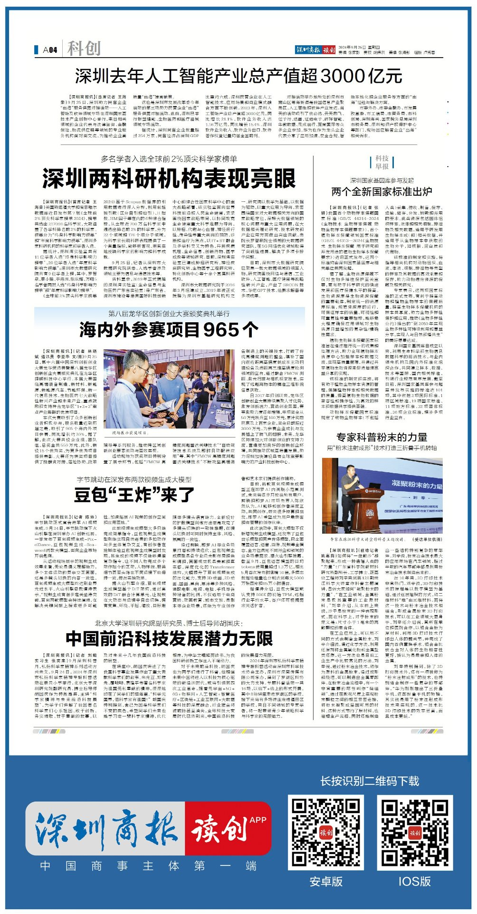

A
媒体矩阵联动
Media Matrix Mobilization
涵盖官媒（深圳发布）、电视媒体（深视新闻）、人才平台（鹏城优才）、纸媒及新媒体（深圳商报）等超 10 家资源，全面提升研究院曝光度。
联动官媒、电视媒体、人才平台、纸媒及新媒体等超 10 家资源，将「TOP 2% 顶尖科学家」核心成果塑造为深圳科研机构标杆案例。打通学术圈层与公众视野，让一次发布成为可被引用的传播典范。
联动超 10 家媒体资源，打造传播典范，
塑造 深圳科研标杆案例。
让研究院在区域科研集群中的曝光度与权威性双重跃迁，成为可被复用的传播模板。
Media Matrix Mobilization
涵盖官媒（深圳发布）、电视媒体（深视新闻）、人才平台（鹏城优才）、纸媒及新媒体（深圳商报）等超 10 家资源，全面提升研究院曝光度。
Content Layering
区域科研集群并提
在多家机构联合报道中，将研究院作为关键科研力量合并提及，强化区域科研集群影响力。
TOP 2% 核心成果关联
聚焦研究院本体介绍与「TOP 2% 顶尖科学家」核心成果关联，展现学术价值。
Benchmark Sediment
打通学术圈层与公众视野，将本次传播塑造为深圳科研机构标杆案例，持续赋能研究院品牌。

点击查看原图 ↗